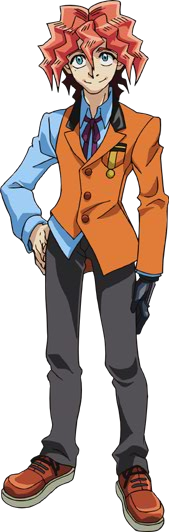
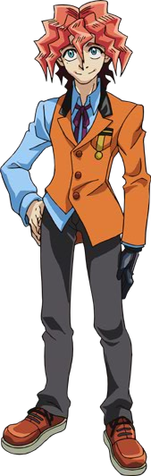

We all know how and why Leo Akaba took certain girls from the Four Dimensions, and what those actions led to (aka Zarc's revival). But a powerful group of Duelists intend to change that. And no, I'm not talking about Reiji Akaba's Lancers…
In his throne room, Akaba Leo , the Professor of the
Fusion Dimension's Duel Academia stood and watched over his greatest creation:
, the Professor of the
Fusion Dimension's Duel Academia stood and watched over his greatest creation:
ARC-V. This machine would be his tool to bring back everything he had lost;
the Original World he called home, and even more importantly, his daughter,
Ray.
This was where the Arc-Area Project came in. By invading the other Dimensions and sealing thousands of people in those Dimensions into cards, their life force would be use to power ARC-V for the purpose of fusing the 4 Dimensions back into one. That same life force would also be used for Revival Zero, the initiative to revive Ray.
So far, everything was going as planned. The first Invasion of the Xyz Dimension was successful and collecting a strong number of sealed cards for the project. There were still survivors, but he knew it was only a matter of time before they were finished there. Then they will move on to the other Dimensions. Before that, he had gotten confirmation from his spy in Xyz that he found the girl he was ordered to locate.
Leo knew that, in order to revive his daughter, he needed to find her fragments. When the Original Dimension had split into 4, so had Ray. As a result, each Dimension
had a girl who shared Ray's face and one of the four bracelets used to defeat the Demon Duelist,
Zarc .
.
The man clinched his fists in anger as he recalled that monster. He was the reason all this happened in the first place, the reason Leo lost everything…including his precious daughter. When he found out that Ray had split into 4 pieces, he also discovered that Zarc had also split into 4 fragments as well. He knew they would have to be eliminated with extreme prejudice should they cross his path.
Fortunately, Leo had already found both of their fragments in this Dimension. One of them he had to keep under lock and key the whole time, even when she was being rebellious toward him. He smiled a bit from that. He remembered Ray being just as much a handful when she was young. He missed all those days he saw her grow up into a remarkable young woman. Soon, that young woman will be by his side once more, just like old times…
???: You wanted to see me, Professor ?
Leo tuned to see who had spoke to him. He did his best to not frown upon the young man's sight. Standing before him was the other fragment he found. The boy was around fourteen and had violet and pink hair, and wore a purple military like uniform. He displayed a cruel smile.
Leo:
Yuri , I have a very important assignment for you. I just received word from
Dennis McField
in the Xyz Dimension. He says he has located a girl I instructed him to find. Meet up with him there, and he will lead you to her. Once you have that girl, bring
her back here to Academia alive and unharmed.
, I have a very important assignment for you. I just received word from
Dennis McField
in the Xyz Dimension. He says he has located a girl I instructed him to find. Meet up with him there, and he will lead you to her. Once you have that girl, bring
her back here to Academia alive and unharmed.
Yuri: You do not want me to card her like the others, Professor ?
Yuri asked, curious as to what made this girl so special as to not be carded.
Leo: Absolutely not. She is not to be damaged in any way. I have important plans for her that require her to be in perfect health. Card anyone that gets in your way, but that girl MUST NOT be harmed! Is that understood, Yuri ?
Leo demanded. Yuri still smiled as he bowed.
Yuri: Understood, Professor. I won't fail you.
Yuri then pushed a button on his Duel Disk and disappeared into blue particles of light. Leo sighed as he turned back to look at his machine.
While he despised Zarc, and by extension his fragments, he admired Yuri's loyalty to him. He had yet to fail an assignment, considering he was on of his best soldiers. Still, Leo felt justified in using Yuri's power to help get his Project underway. He was interrupted again by another of his followers.
Leo: What is it ?
Leo asked as a viewing screen appeared before him.
Subordinate: Professor, our spy network in the Synchro Dimension has just found a girl matching Lady Serena's face and wearing a bracelet on her right wrist.
Leo acquiessa la tête.
Leo: Good. Give me her exact location.
He was then given a digital map of the Synchro Dimension, and as he narrowed on a blinking red circle, he saw his next target. The Professor smiled.
Leo: That makes two pieces located. Once Yuri has them both brought here, I just need to find the fourth and final piece...
Akaba Leo knew his own spy in the Standard Dimension would surely come across Ray's fragment there. When he returns, he'll examine his memories for any encounters he may have had with her. Then, after Yuri brings her to Academia, then he'll have all the pieces he'll need to bring Ray back.
Leo: Yes, It won't be too long before we are together again, Ray. I will bring you back and restore our true home. And no one will stand in my way... No one !
Nico Smiley : And the winner is… Yuya Sakaki !
Sakaki Yuya , a red and green haired
fifteen year old boy, smiled as the crowd cheered for him after winning his first duel with his new Pendulum cards. He could see his mother and friends cheering for his
victory from the spectator stands.
, a red and green haired
fifteen year old boy, smiled as the crowd cheered for him after winning his first duel with his new Pendulum cards. He could see his mother and friends cheering for his
victory from the spectator stands.
Among the audience was a boy around Yuya's age that seemed weary as well as impressed. He had spiky dark and magenta edged hair with blonde bangs hanging down and wore a dark blue jacket over a black sleeveless shirt and dark purple pants. His most noticeable detail, that sometimes caught peoples' eye, was the small gold pyramid around his neck.
He could see Yuya's mom and friends not too far from where he sat. He also saw the girl that was cheering the hardest for Yuya. A pink haired girl with pigtails waved at Yuya, happy that he won and brought smiles to the people who watched.
Yuzu: Way to go, Yuya ! You sure got everyone smiling today !
The boy also saw that the girl had a bracelet on her right wrist that had two pink stones on it.
on her right wrist that had two pink stones on it.
???: That's them: Sakaki Yuya and
Hiragi Yuzu ...
...
???(2): Yes. Finding them wasn't a problem. The real difficulty is keeping them safe. We need to be ready when Academia makes their move...
Said another voice only the young boy with the pyramid could hear.

After a big yacht had just docked with the island where Duel Academia resided, all the new students began to disembark. They were all excited to arrive, eager to begin their training to become Pro Duelists. One of them, a brown haired boy who wore an open red jacket and dark gray pants, did not share their enthusiasm.
???: Poor kids. They have no idea what kind of Dueling school this is. I'm glad I won't have to be here long.
The boy thought as he began to enter the place among the other students.
???(2): Of course not. Once you find Serena and convince her of the truth, you both will need to flee with your tails between your legs. Also, leaving will be much
harder than getting in...
Replied a female voice only that boy could hear. The boy sighed.
???: Believe me Yubel, I'm well aware of that. I just hope Serena will listen to reason when the time comes...
At around the same time, a girl with indigo hair (wrapped in a ponytail) and light blue bangs sneezed in her bedroom. As she wiped her nose,
Serena wondered if someone was talking about her just then. But then she shrugged it off, thinking it was nothing important. She then fiddled with her
purple stone bracelet
wondered if someone was talking about her just then. But then she shrugged it off, thinking it was nothing important. She then fiddled with her
purple stone bracelet She did that when something agitated her, like now.
She did that when something agitated her, like now.
Serena: Why should I be concerned if someone was talking about me ? Its not like the Professor would ever give me a chance to prove myself worthy of being one of his best Dueling Soldiers for the Arc-Area Project. Uggh, I just wish something would happen soon that changes things for me...
Yugo: Hey Rin ! You want shrimp ramen tonight, or chicken ?
! You want shrimp ramen tonight, or chicken ?
A teenage boy with blue and yellow hair wearing a white riding suit asked his friend as they looked at their choices for their dinner. Rin, a girl around his age with short green hair and wore a light blue and pink outfit, sighed in exasperation.
Rin: Ramen again ? Yugo , we need to eat more healthy foods than this. Plus, we just had ramen last night! You need to eat real food like fruits and vegetables. Luckily, I know where we
can find some good produce. Now come on !
, we need to eat more healthy foods than this. Plus, we just had ramen last night! You need to eat real food like fruits and vegetables. Luckily, I know where we
can find some good produce. Now come on !
Rin insisted as she had to literally drag Yugo by the arm. Her right arm, which she used to drag Yugo, held a bracelet with a green stone embedded in it.
with a green stone embedded in it.
Yugo: Aw come on, Rin! Just one cup! One that has the Duel King, Jack Atlas , pictured on it !
, pictured on it !
Yugo begged, practically in tears. But Rin wouldn't have it.
Rin: You already have like a dozen of those back home! Any more and they'll start taking up space you need to move ! I swear Yugo, you really need to grow up and act your age !
Yugo cried pathetically as Rin moved him toward where the produce was. Not far from them, a young man around 19 with black and dark yellow spiky hair, wearing a blue biker jacket and had a yellow mark on his face, observed the bickering pair. He was pretending to shop so he could watch them without drawing unwanted attention to himself. He couldn't help but smile a little from their banter.
???: Yugo et Rin... they are an interesting pair. I know they care about each other, even if they don't always agree on everything. They need to stay together... and I will make sure of that.
He thought to himself as he held his left hand on his right arm, where a red mark softly glowed...
softly glowed...
Ruri:
Yuto !
Shun
!
Shun ! Over here !
! Over here !
Called out a pretty teenage girl with long, dark purple hair and wore light colored work clothes. She waved her right arm, which held a
bracelet with a yellow colored stone inside it. Seconds later, two young men met up with her.
with a yellow colored stone inside it. Seconds later, two young men met up with her.
Shun: Ruri ! Is something wrong ?
! Is something wrong ?
The older man, who looked about 17, asked with great concern. Ruri shook her head.
Ruri: No Shun, I just need help getting more towels and water buckets for the sick and wounded.
Ruri replied as she pointed to some tents further out. There were many tents like that, considering they are practically living in a war zone that was once a peaceful city.
Yuto: Whatever you need, Ruri, we'll do what we can.
Said Yuto, the younger boy who looked much more of Ruri's age. He had black and light purple spiky hair and wore dark, tattered clothes. Also, all three of them wore red scarfs somewhere on their outfits.
Ruri: I know. Thanks you two.
Ruri said as the two ran to find more towels and buckets. Nearby, a much younger boy, around 13, observed the trio from the other side of another tent. He had short
dark spiky hair with red bangs up front. He wore a red sleeveless jacket and white pants with flames on them. He also had a strange golden key hanging around his neck.
hanging around his neck.
???: There they are, Astral .
.
Il le dit, alors qu'il se tournait vers un être lumineux bleu flottant à côté de lui. Le garçon avec qui il est, était la seule personne présente qui pouvait le voir et l'entendre.
Astral: Yes, Yuto and Ruri Kurosaki. And the older one was her brother and Yuto's best friend, Shun Kurosaki. He can handle himself, but it is the other two we need
to watch over.
Astral said.
???: Yeah, I know. We gotta make sure to protect them from Academia. More Ruri so than Yuto.
Said the boy, feeling anxious.
Astral: I believe we will have to make our move very soon. Look there, to your right.
Astral said, pointing in that direction. When the boy turned to see what Astral was talking about, he gasped and widened his eyes in shock. He saw two young men conversing not far from where Ruri was gathering water. One of them was wearing a cloak, but he could still make out his face.
???: It's him…Yuri. He's already here.
The boy whispered. Astral nodded.
Astral: Indeed. The time for action is upon us. Are you ready ?
Astral asked his human companion. The boy smiled broadly.